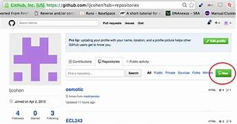
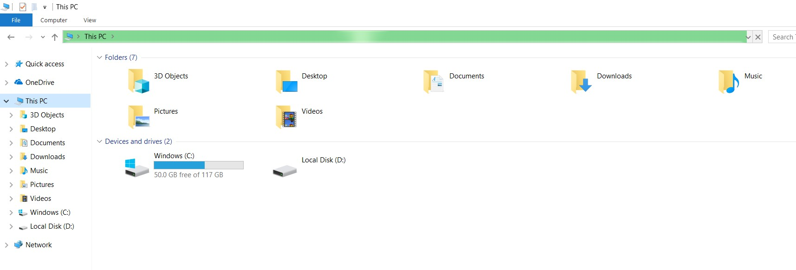
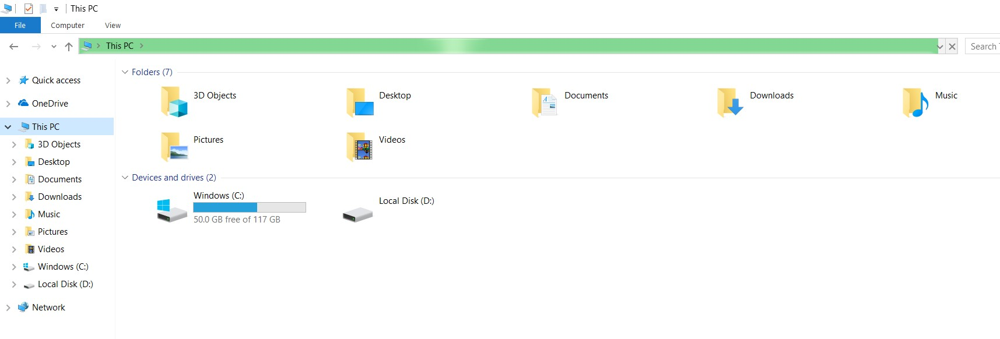
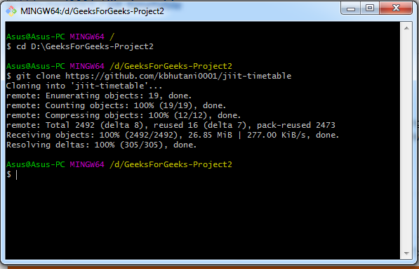
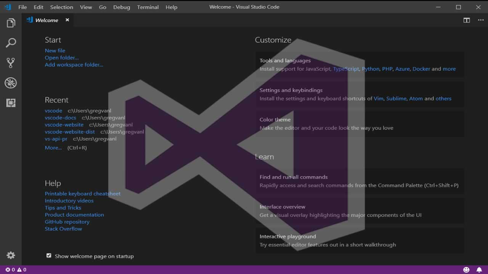
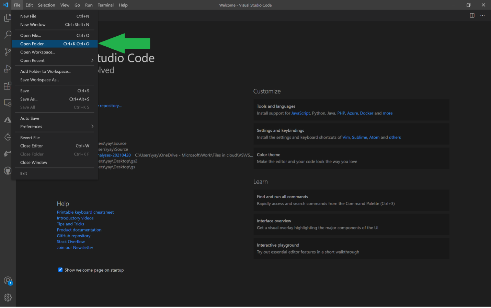
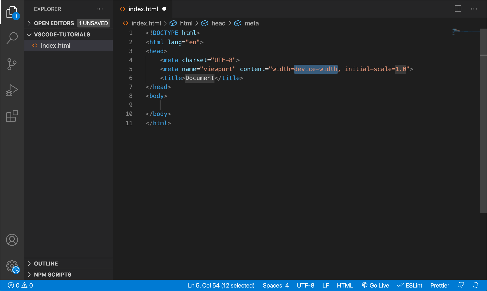
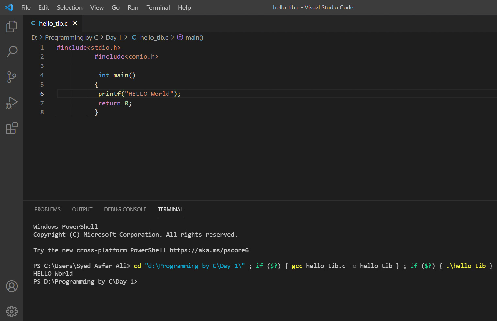
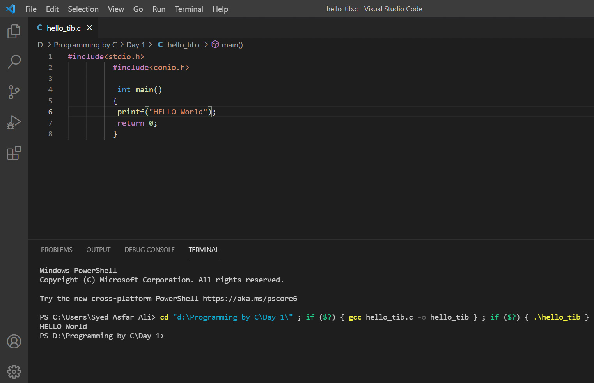
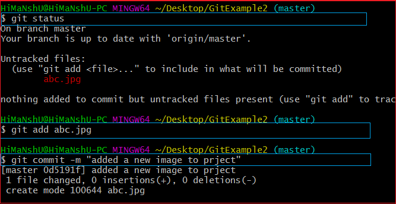

step 1:Login your git hub account

step 2:create new repository project

step 3:go your local disk example local e/drive and right click option open git bash/cmd command promt
 


step 4:write the code git clone " your repository link" and enter clonig

step 5:open your vs code and select the Repository folder your local disk and open the folder


step 6:create any new file ex: (page1.html/page.css)

step 7: And then open the vs code terminal short cutkey:(ctrl+~)
 

step 8:And write the code git add .

(and all files adding code is git add -A)

step 9:write the code git status
step 10:write the code git commit -m "your any messagess"
step 11:write the code git push

open your Git hub repository and refresh
next page